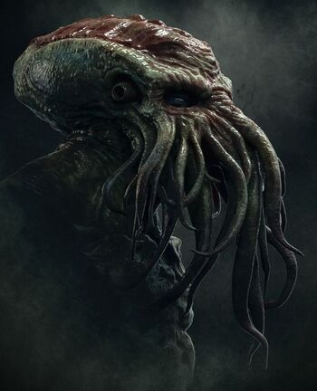

clulhu mythos
presented by H.P.Lovecraft
presented by TEDEd
list of gods by images

a deity in the Cthulhu Mythos and Dream Cycle stories of writer H. P. Lovecraft and other authors. He is the ruler of the Outer Gods, and may be seen as a symbol for primordial chaos
one of the Outer Gods, a malevolent pantheon,is described as a "tall, swarthy man" who resembles an ancient Egyptian pharaoh.
a cosmic entity and Outer God. Born of the Nameless Mist, he is the progenitor of Cthulhu, Hastur the Unspeakable and the ancestor of the Voormi. He is also the father of Wilbur Whateley.
called The Black Goat of the Woods with a Thousand Young, is an Outer God in the Cthulhu Mythos of H.P. Lovecraft. Shub-Niggurath is an Outer God (or Outer Goddess) in the pantheon. She is a perverse fertility deity, said to appear as an "evil cloud-like entity".
Six feet end to end, three and five-tenths feet central diameter, tapering to one foot at each end. Like a barrel with five bulging ridges in place of staves. Lateral breakages, as of thinnish stalks, are at equator in middle of these ridges. In furrows between ridges are curious growths—combs or wings that fold up and spread out like fans ... which gives almost seven-foot wing spread. Arrangement reminds one of certain monsters of primal myth, especially fabled Elder Things in the Necronomicon.
Shoggoths are amorphous, shapeshifting beings. They were genetically engineered by the Elder Things as a race of servant-tools, but eventually rose up against their masters and drove them to extinction. Shoggoths are now found in isolated locales across Earth.
Cthulhu is a Great Old One of great power who lies in a death-like slumber beneath the Pacific Ocean in his sunken city of R'lyeh. He remains a dominant presence in the eldrich dealings on our world.